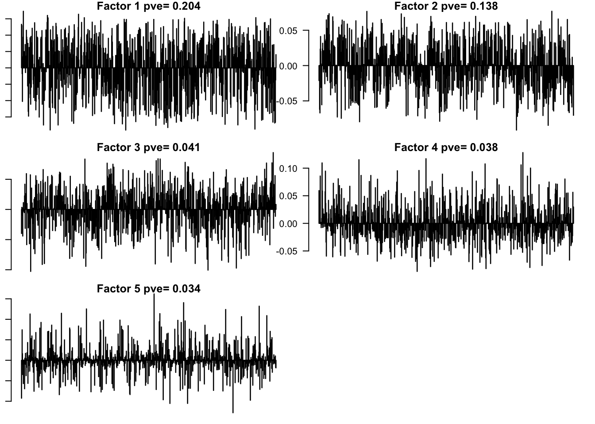
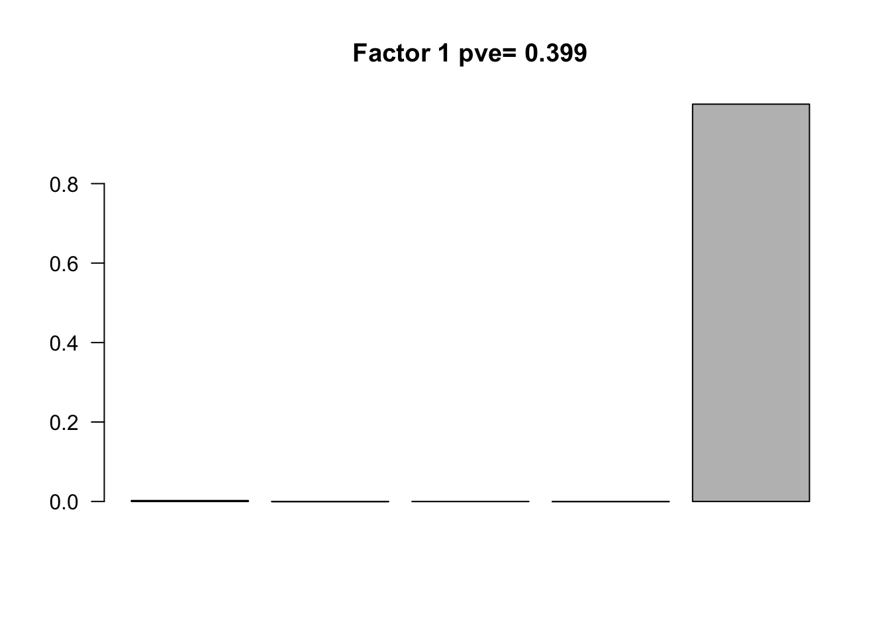

Last updated: 2018-03-08
Code version: 7bd0159
library(flashr); library(R.matlab)R.matlab v3.6.1 (2016-10-19) successfully loaded. See ?R.matlab for help.
Attaching package: 'R.matlab'The following objects are masked from 'package:base':
getOption, isOpenlibrary(denoiseR)Presidential Address data:
The data contains word counts from the inaugural addresses of 13 US presidents (1940–2009). There are 13 rows (presidents) and 836 columns (words), and each entry indicates the number of times a particular word was used in a particular address. Since both row and column means vary greatly here we pre-processed the data by centering and scaling both rows and columns, using the biScale function from softImpute.
data("Presidents")
data = readMat('../data/PresiAdd.mat')
data = data$Yscaled
words = row.names(Presidents)
names = colnames(Presidents)
row.names(data) = names
colnames(data) = wordsFlash:
flash.data = flash_set_data(data)
fmodel = flash(flash.data, greedy = TRUE, backfit = TRUE)fitting factor/loading 1fitting factor/loading 2fitting factor/loading 3fitting factor/loading 4fitting factor/loading 5fitting factor/loading 6saveRDS(fmodel, '../output/PresiAddVarCol.rds')Factors = flash_get_ldf(fmodel)$f
row.names(Factors) = words
pve.order = order(flash_get_pve(fmodel), decreasing = TRUE)par(mar=c(1,1,1,1))
par(mfrow=c(3,2))
for(i in pve.order){
barplot(Factors[,i], main=paste0('Factor ',i, ' pve= ', round(flash_get_pve(fmodel)[i],3)), las=2, names='')
}
par(mfrow=c(1,1))
Flash again on the loading matrix
flash.loading = flash_set_data(fmodel$EL[,1:5])
flmodel = flash(flash.loading, greedy = TRUE, backfit = TRUE)fitting factor/loading 1fitting factor/loading 2Factors_loading = flash_get_ldf(flmodel)$fbarplot(as.numeric(Factors_loading), main=paste0('Factor 1 pve= ', round(flash_get_pve(flmodel),3)), las=2, cex.names = 0.4, names='')
The distributions for the first four columns of the loading matrix are consistent with a normal distribution. So they are captured by the error term of the second flash run.
We check the strongest words in each factor.
The first factor separates the words about Iraq from those very general political words.
# Factor 1
words[order(Factors[,1], decreasing = TRUE)[1:50]] [1] "Iraq" "critical" "away " "tomorrow" "depend "
[6] "bad " "play " "whatever" "guarantee " "simply "
[11] "longer " "hear " "partner" "often" "road "
[16] "era " "responsible" "plant" "recession " "easy "
[21] "least" "avoid" "deep " "happen " "view "
[26] "agree" "vice " "building" "lay " "solve"
[31] "launch " "reward " "fundamental" "$1" "contribute "
[36] "rule " "week " "fulfill" "election" "0"
[41] "competitive" "tough" "big " "street " "burden "
[46] "moral" "soon " "speed" "powerful" "simple " words[order(Factors[,1])[1:50]] [1] "have " "be" "to" "need " "make "
[6] "as" "can " "state" "service" "most "
[11] "government " "force" "continue" "world" "nation "
[16] "year " "other" "will " "increase" "people "
[21] "congress" "peace" "provide" "national" "unite"
[26] "would" "use " "system " "private" "program"
[31] "meet " "must " "now " "also " "progress"
[36] "security" "great" "policy " "high " "legislation"
[41] "action " "good " "not " "only " "important "
[46] "economic" "public " "first" "law " "past " The second factor separates the words about people’s life, like ‘child’, ‘job’, ‘school’, ‘parent’, ‘Medicare’, from political words.
# Factor 2
words[order(Factors[,2], decreasing = TRUE)[1:50]] [1] "thus " "complete" "affair " "executive "
[5] "adequate" "particularly " "importance " "agricultural "
[9] "facility" "understanding" "western" "demonstrate"
[13] "situation " "activity" "assure " "capacity"
[17] "substantial" "agriculture" "available " "improvement"
[21] "objective " "republic" "natural" "period "
[25] "legislative" "rapidly" "provision " "cooperation"
[29] "maintain" "design " "requirement" "general"
[33] "basis" "assist " "structure " "resource"
[37] "position" "political " "relation" "i"
[41] "clearly" "vast " "appropriate" "farm "
[45] "contribution " "exist" "being" "addition"
[49] "industrial " "organization "words[order(Factors[,2])[1:50]] [1] "safe " "thank" "child" "join " "pass " "ask "
[7] "here " "america" "save " "get " "family " "sure "
[13] "young" "fellow " "American" "job " "who " "say "
[19] "just " "start" "lead " "know " "n" "tonight"
[25] "stop " "when " "leave" "parent " "back " "together"
[31] "America" "money" "so" "honor" "next " "let "
[37] "do" "begin" "school " "reform " "go" "create "
[43] "cut " "worker " "day " "keep " "t" "down "
[49] "help " "bill " The third factor separate the words about government and development of technology. These words are used in Carter’s address.
# Factor 3
words[order(Factors[,3], decreasing = TRUE)[1:50]] [1] "win " "may " "method " "destroy" "man "
[6] "point" "whole" "war " "fact " "find "
[11] "power" "practice" "follow " "few " "victory"
[16] "army " "great" "far " "shall" "modern "
[21] "history" "labor" "lie " "possible" "case "
[26] "rest " "not " "produce" "certain" "immediate "
[31] "learn" "accept " "fight" "live " "carry"
[36] "fear " "adequate" "beginning " "would" "ahead"
[41] "mean " "total" "condition " "operation " "fail "
[46] "back " "believe" "session" "task " "part " words[order(Factors[,3])[1:50]] [1] "administration " "remain " "stability "
[4] "develop" "area " "major"
[7] "assistance " "promote" "nuclear"
[10] "significant" "sector " "relation"
[13] "strong " "establish " "comprehensive"
[16] "demonstrate" "conservation " "sign "
[19] "negotiation" "system " "technology "
[22] "agreement " "development" "political "
[25] "strategic " "ensure " "serious"
[28] "support" "policy " "agency "
[31] "important " "energy " "soviet "
[34] "provide" "region " "continue"
[37] "oil " "foundation " "importance "
[40] "improve" "encourage " "commitment "
[43] "western" "funding" "access "
[46] "global " "addition" "rural"
[49] "stable " "assist " The fourth factor separate the words about Vietnam war.
# Factor 4
words[order(Factors[,4], decreasing = TRUE)[1:50]] [1] "session" "history" "chance "
[4] "Vietnam" "poverty" "senate "
[7] "south" "goal " "entire "
[10] "achievement" "open " "land "
[13] "city " "consumer" "Asia "
[16] "skill" "quality" "answer "
[19] "water" "deal " "question"
[22] "partnership" "in" "congress"
[25] "then " "enter" "ahead"
[28] "treaty " "try " "structure "
[31] "reach" "approve" "believe"
[34] "resolve" "i" "measure"
[37] "last " "move " "test "
[40] "crime" "possible" "assist "
[43] "hospital" "transportation " "pledge "
[46] "live " "revenue" "early"
[49] "truly" "$1" words[order(Factors[,4])[1:50]] [1] "general" "operation " "practice" "sound"
[5] "immediate " "such " "production " "permanent "
[9] "situation " "number " "industrial " "fundamental"
[13] "day " "whole" "future " "effect "
[17] "ideal" "investment " "powerful" "force"
[21] "encourage " "plant" "agricultural " "include"
[25] "away " "activity" "group" "exist"
[29] "army " "plan " "certain" "long "
[33] "thing" "condition " "rest " "democratic "
[37] "produce" "term " "process" "objective "
[41] "fall " "democracy " "put " "gain "
[45] "capital" "service" "pay " "armed"
[49] "economic" "depend " The fifth factor separates words about Vietnam war from words like ‘peacetime’, ‘reform’.
# Factor 5
words[order(Factors[,5], decreasing = TRUE)[1:50]] [1] "look " "place" "truly" "difference "
[5] "set " "chance " "message" "address"
[9] "washington " "structure " "example" "generation "
[13] "particular " "point" "meet " "environment"
[17] "approach" "peacetime " "beginning " "record "
[21] "historic" "critical" "goal " "million"
[25] "decision" "comprehensive" "america" "open "
[29] "preserve" "government " "concern" "America"
[33] "building" "era " "great" "priority"
[37] "balanced" "what " "back " "proposal"
[41] "ahead" "become " "negotiation" "same "
[45] "natural" "fundamental" "relationship " "sense"
[49] "reform " "particularly "words[order(Factors[,5])[1:50]] [1] "south" "north" "poverty" "test " "month"
[6] "$1" "carry" "hospital" "hope " "especially "
[11] "early" "danger " "aggression " "public " "seek "
[16] "rest " "payment" "food " "approve" "europe "
[21] "man " "try " "permit " "Vietnam" "prevent"
[26] "prepare" "find " "unity" "already" "certain"
[31] "entire " "course " "skill" "close" "home "
[36] "in" "last " "effort " "think" "pledge "
[41] "short" "conflict" "recommend " "least" "strengthen "
[46] "extend " "finally" "Iraq" "achievement" "bear " Checking the loading matrix
loading = fmodel$EL[,1:5]
row.names(loading) = names
loading [,1] [,2] [,3] [,4] [,5]
Roos -11.749949 7.3625658 17.85384337 -12.95451443 0.018641829
Trum -19.545564 10.6172584 5.84426524 -6.03364902 -0.025528893
Eise -17.804700 13.7714467 -4.18405718 -4.34058236 0.022367090
Kenn 15.089515 13.3985343 -0.22487247 -0.03688365 -21.745118226
John -2.471928 -0.7544205 6.48496963 26.92988948 -38.428225506
Nixo 9.068585 6.3107013 4.30658520 18.88490017 51.978743499
Ford 18.748130 11.3162886 -5.12464770 -4.16083773 0.016974278
Cart -13.115567 7.1901043 -23.24710473 0.02551236 0.001341336
Reag -5.423707 -17.3142106 -0.07000135 -0.11704529 7.122486088
Bush 18.904265 -6.6852742 0.07994342 -11.92173614 -0.004739630
Clin -8.207371 -22.7657349 -0.01911699 0.11123080 0.075746403
Bushf -4.507005 -18.7038114 -0.05075150 -0.12599003 -0.027001068
Obam 20.995769 -3.6126797 -0.01329787 -5.48368076 -0.033863230Kennedy, Johnson and Nixon used the words in Factor 5 a lot. This is reasonable since the Vietnam war was happened during their presidency term. When Nixon took office, people want peace because of the long times of the war. So he used words about ‘peace’ in his address a lot.
sessionInfo()R version 3.4.3 (2017-11-30)
Platform: x86_64-apple-darwin15.6.0 (64-bit)
Running under: macOS High Sierra 10.13.3
Matrix products: default
BLAS: /Library/Frameworks/R.framework/Versions/3.4/Resources/lib/libRblas.0.dylib
LAPACK: /Library/Frameworks/R.framework/Versions/3.4/Resources/lib/libRlapack.dylib
locale:
[1] en_US.UTF-8/en_US.UTF-8/en_US.UTF-8/C/en_US.UTF-8/en_US.UTF-8
attached base packages:
[1] stats graphics grDevices utils datasets methods base
other attached packages:
[1] denoiseR_1.0 R.matlab_3.6.1 flashr_0.5-6
loaded via a namespace (and not attached):
[1] Rcpp_0.12.15 compiler_3.4.3 git2r_0.20.0
[4] plyr_1.8.4 R.utils_2.6.0 R.methodsS3_1.7.1
[7] iterators_1.0.9 tools_3.4.3 digest_0.6.13
[10] evaluate_0.10.1 tibble_1.3.4 gtable_0.2.0
[13] lattice_0.20-35 rlang_0.1.6 Matrix_1.2-12
[16] foreach_1.4.4 yaml_2.1.17 parallel_3.4.3
[19] ebnm_0.1-10 cluster_2.0.6 stringr_1.3.0
[22] knitr_1.20 flashClust_1.01-2 scatterplot3d_0.3-40
[25] rprojroot_1.2 grid_3.4.3 rmarkdown_1.8
[28] irlba_2.3.2 FactoMineR_1.39 ggplot2_2.2.1
[31] ashr_2.2-7 magrittr_1.5 leaps_3.0
[34] backports_1.1.2 scales_0.5.0 codetools_0.2-15
[37] htmltools_0.3.6 MASS_7.3-47 assertthat_0.2.0
[40] softImpute_1.4 colorspace_1.3-2 stringi_1.1.6
[43] lazyeval_0.2.1 pscl_1.5.2 doParallel_1.0.11
[46] munsell_0.4.3 truncnorm_1.0-8 SQUAREM_2017.10-1
[49] R.oo_1.21.0 This R Markdown site was created with workflowr